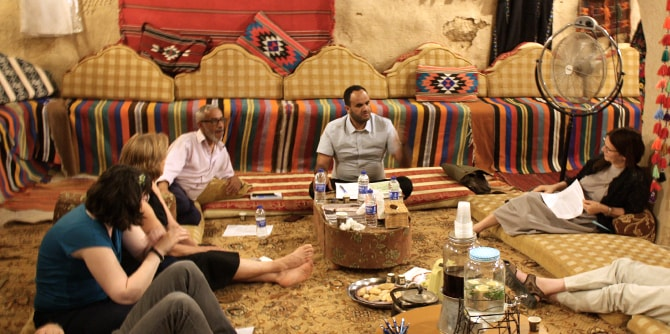
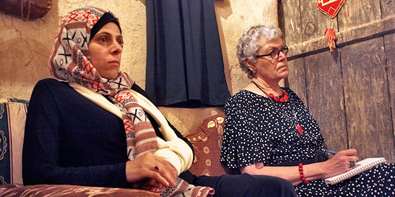

The fifth session of this year's Negev Lab series took place at Huriah Palace, a visitors’ center in Lakia dedicated to the culture and heritage of Arab-Bedouin society in the Negev. The session focused on sharing and partnership, a theme that is rooted in a vision of strengthening a shared space that will bring the various communities of the Negev together and facilitate social and cultural diversity.
The main topic of this year’s Negev Lab series is shade and desert. This session, which took place during the month of Ramadan, began with a discussion circle in which the participants explored what fasting means to them and the connection between fasting and shade in life in the desert. This served as a basis for open discussion between the participants, who come from varied communities in the Negev.

After the iftar meal, which marks the end of the daily Ramadan fast, a study session was led by Kassim Alsraiha, a faculty member of the Mandel Center for Leadership in the Negev. Kassim is a historian who researches religion and state in the Middle East and is an expert on the history of tribal law in Arab-Bedouin society in the Negev. Based on a group reading of a text by the historiographer Ibn Khaldun (1332–1406), he led a discussion about the way human societies make the transition from desert life to city life, and presented a model that compared the development of cultures that emerged from settlement around rivers and the development of cultures that emerged from settlement in the desert. The text served as the basis for discourse about the differences between these cultures as principal sources of inspiration and human creativity.
Led by
Dr. Ruth Calderon, a visiting faculty member at the Mandel Center for Leadership in the Negev, and
Dr. Adi Nir-Sagi, director of the Center, the Negev Lab series is a forum of leaders and key figures from the Negev who come together to learn and be inspired by local culture and art. The series is attended by community leaders from the Negev who are active in local government, academia, public institutions, and cultural organizations active in the local arts.

{kind=link}
{kind=link}